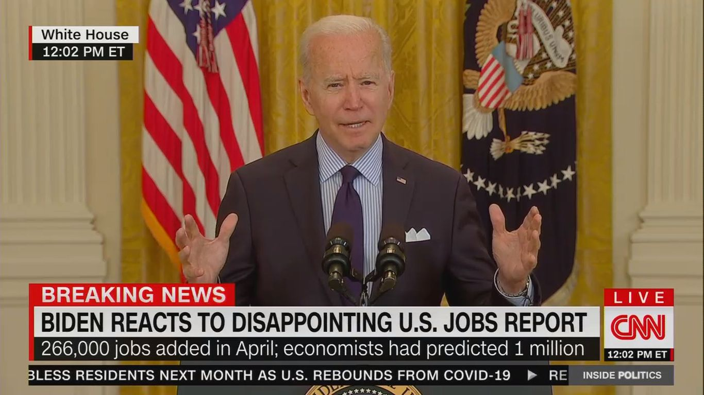
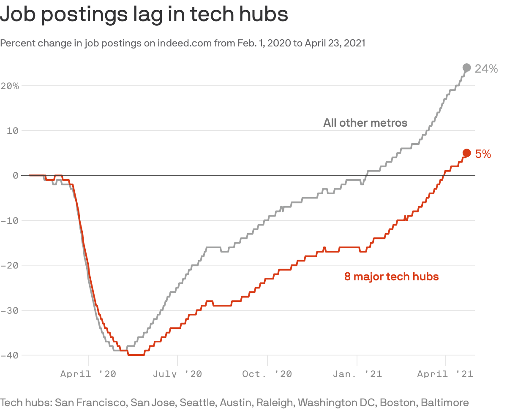
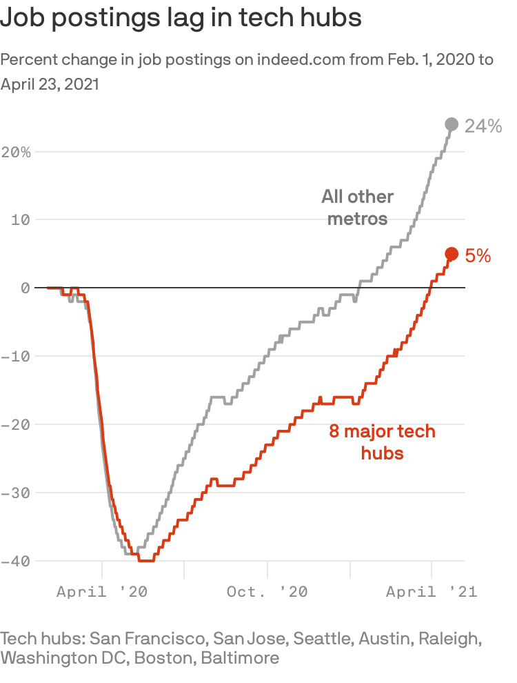
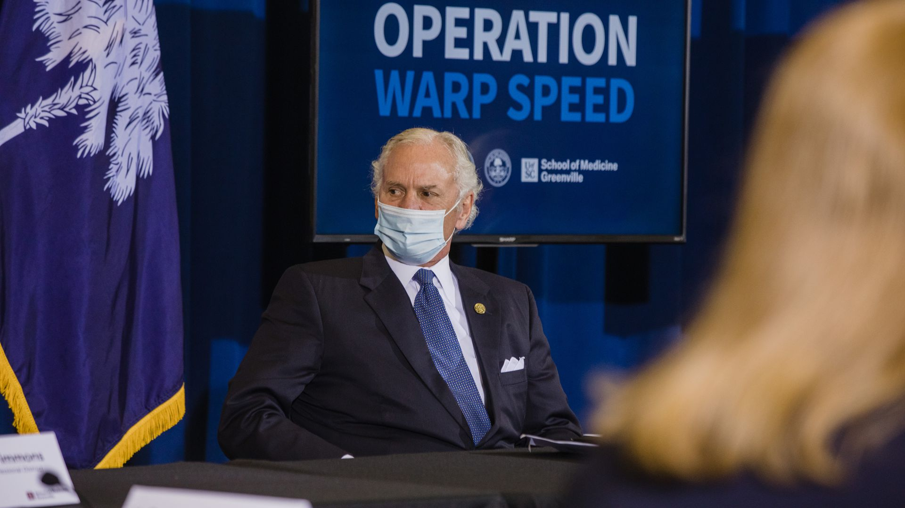

Biden: Disappointing jobs report shows recovery is a 'marathon,' not a 'sprint'
President Biden said Friday that the disappointing April jobs report, which showed the U.S. economy added just 266,000 jobs last month, underscores the importance of the COVID-19 relief package and his other proposed spending plans.
Why it matters: Economists had expected a gain of around 1 million jobs last month, making this the biggest payrolls miss, relative to expectations, in decades.
Between the lines: Republicans have seized on the underwhelming figures to attack Biden's spending plans as unnecessary and damaging to the economy, claiming that expanded unemployment benefits have kept Americans from seeking jobs.
What they're saying: 'Listening to commentators today, as I was getting dressed, you might think that we should be disappointed.But when we passed the American Rescue Plan, I want to remind everybody it was designed to help us over the course of a year, not 60 days.A year,' Biden said in an address from the White House.
The big picture: Biden noted that overall, the economy has added more than 1.5 million jobs since he took office, an average of 500,000 per month.'This is progress,' he said.'And it's a testament to our new strategy of growing this economy from the bottom up and the middle out.'
What to watch: Yellen said she expects the U.S. economy to reach full unemployment next year.
Posted On: 2021-05-07T00:00:00
Posted By: Axios




Content Date: 2021-05-07
Download Date: 2021-05-15
Document ID: L0C04CCXS